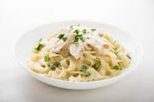

Chicken-Alfredo

A delicious dish containing alfredo sauce
Ingredients
- 6 tblspn butter
- 1 garlic clove minced
- 1 1/2 heavy cream
- 1/4 teaspn salt
- 1 1/4 cup shredded parmasan cheese
- 1/4 teaspn pepper
- 2 tblspn italian parsley
Steps
- Start by bringing water to boil in a large pot
- Add salt to the water to season the pasta
- Once boiling add pasta
- Saute the butter and garlic until softend
- Add heavy cream and let simmer over medium high heat for 5 minutes to thicken
- Add salt and pepper to taste
- Add half of the parmasan cheese to the mixture
- Whisk until smooth
- Save some pasta water(Used to thin out sauce if needed)
- Toss alfredo sauce with fettucine pasta and add half of the parmasan cheese
- Once tossed garnish with remaining cheese
- Garnish with italian parsley(If desired)